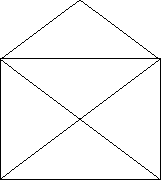
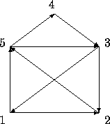

| The House Of Santa Claus |
In your childhood you most likely had to solve the riddle of the house of Santa Claus. Do you remember that the importance was on drawing the house in a stretch without lifting the pencil and not drawing a line twice? As a reminder it has to look like shown in Figure 1.

Figure: The House of Santa Claus
Well, a couple of years later, like now, you have to ``draw'' the house again but on the computer. As one possibility is not enough, we require all the possibilities when starting in the lower left corner. Follow the example in Figure 2 while defining your stretch.

Figure: This Sequence would give the Outputline 153125432
All the possibilities have to be listed in the outputfile by increasing order, meaning that 1234... is listed before 1235... .
So, an outputfile could look like this:
12435123 13245123 ... 15123421